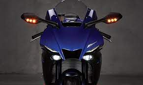

YZF R1M
Esta moto fue producida y diseñada por la empresa Yamaha, la R1M tiene un top speed de 284km/h, siendo una de las mas iconicas de la marca Yamaha hoy en dia, personalmente para mi es una de las mejores motos, ya que tiene un buen precio para ser una moto deportiva de alto cc y teniendo un diseño bastante agresivo sin perder su elegancia .

Porche 919 EVO
Este es una obra maestra de la ingenieria, primero , este auto no cuenta con ninguna regulacion, o en otras palabras, no tiene reglas , y esto Porche lo supo aprovechar muy bien , con ello el Porche 919 EVO logra un top speed de 376km/h y generar a su vez casi 1 toneladas de carga aerodinamica, entre todas sus grandes hazañas , hay una que destaca , y es que consiguio el récord en Nürburgring con un tiempo de 5:19.55 minutos , siendo asi el dueño completamente del Nürburgring.

Mercedes-AMG F1 W11 EQ Performance
Mejor conocido por solo W11, este monoplaza creado y diseñado por el equipo de Mercedes-AMG F1 fue creado para la temporada 2020, se considera hasta la fecha, el monoplaza mas dominante y es el unico capaz de hacerle frente al legendario Porche 919 EVO, una muestra de ello es cuando consiguio batir el record de vuelta de Spa-Francorchamps impuesto por Neel Jani con el 919 EVO, reduciendo el tiempo de 1:41.77 a 1:41.25

kawasaki-Ninja-H2R
La Reina indiscutible de las motos , fue creada en 2015 por Kawasaki Heavy Industries es una marca inmensa que fabrica absolutamente productos de todo tipo. Y con toda la experiencia que atesora, han puesto toda la carne en el asador para crear la Kawasaki Ninja H2R como un producto hecho en casa, teniendo un top speed de 400km/h, jeje , esta moto esta hecha para gente con huevos.
Lexus LFA
Para ser sinceros , este auto no destaca mucho ni en diseño ni en rendimiento pero hay algo que lo hace tan hermoso, y eso es el sonido que produce, el LFA tiene un V10 naturalmente aspirado que lleva hasta las 10,000 rpm ,lo que hace que produzca uno de los mejores sonidos del automovilismo , y tiene la fan de que suena igual que un F1 de por alla del 2006 y 2005.

Mercedes AMG ONE
Por ultimo pero no menos importante encontramos al AMG ONE , este auto fue diseñado de una manera bastante espectacular ya que tiene tecnologia F1 , quiere decir que tanto su unidad de potencia como tambien informacion importante como lo son datos aerodinamicos son provenientes del equipo F1 de Mercedes, tiene un top speed de 352km/h , siendo asi el auto de produccion mas rapido del mundo .